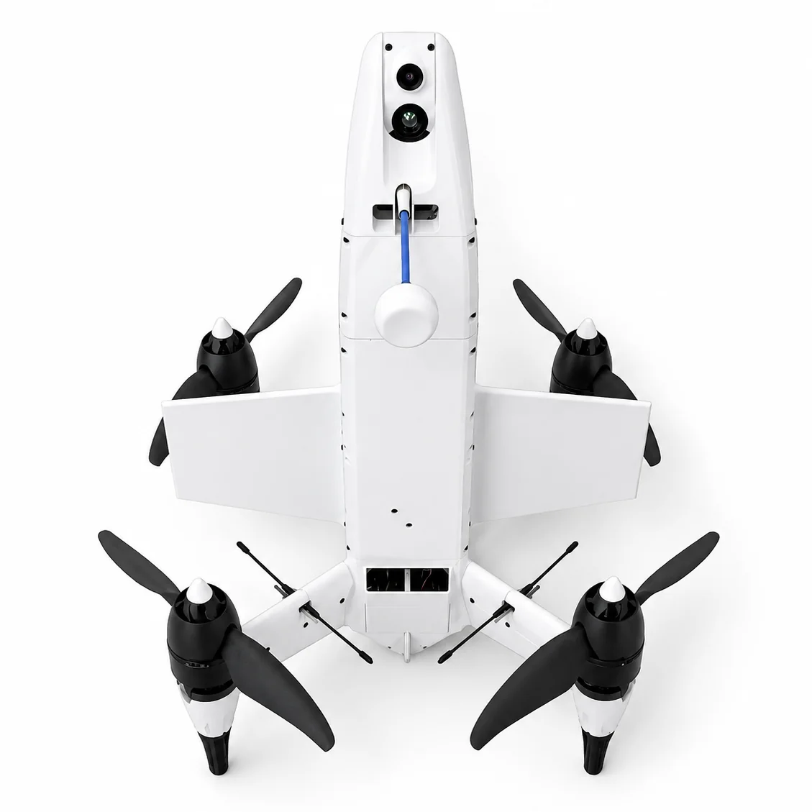
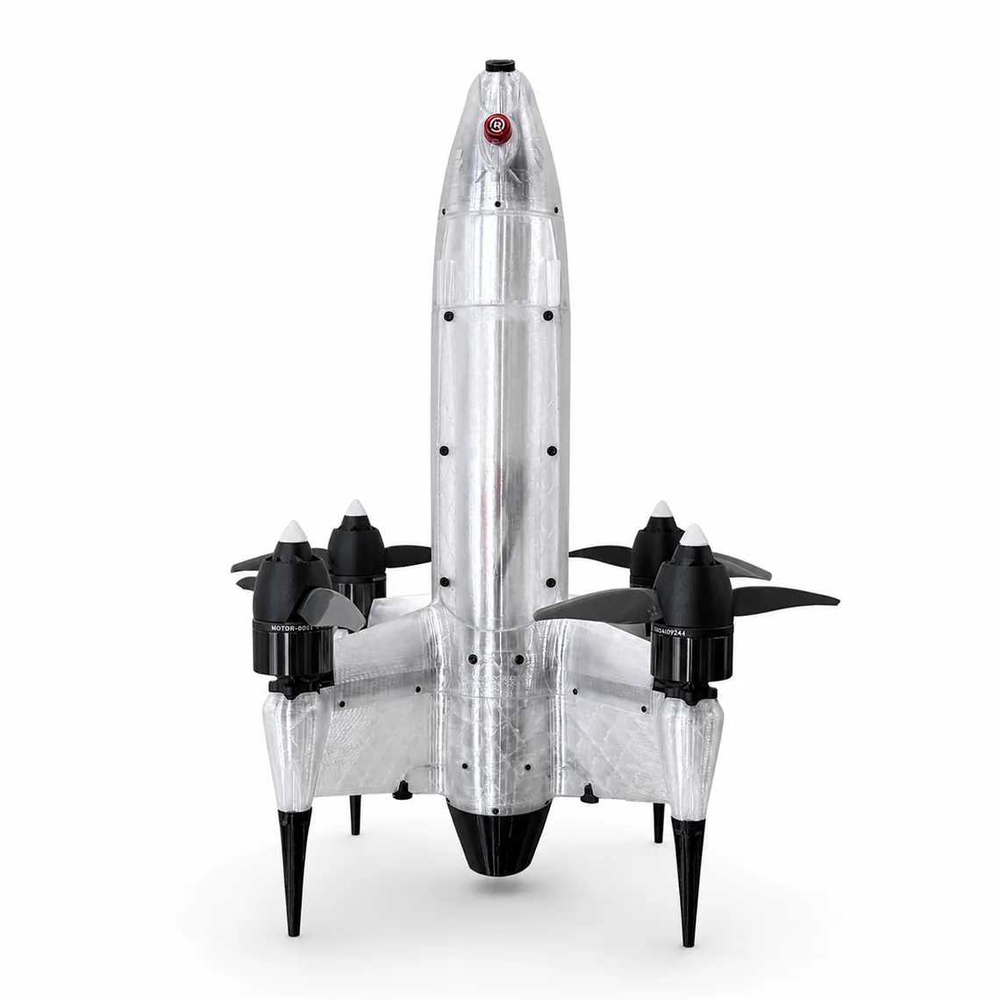
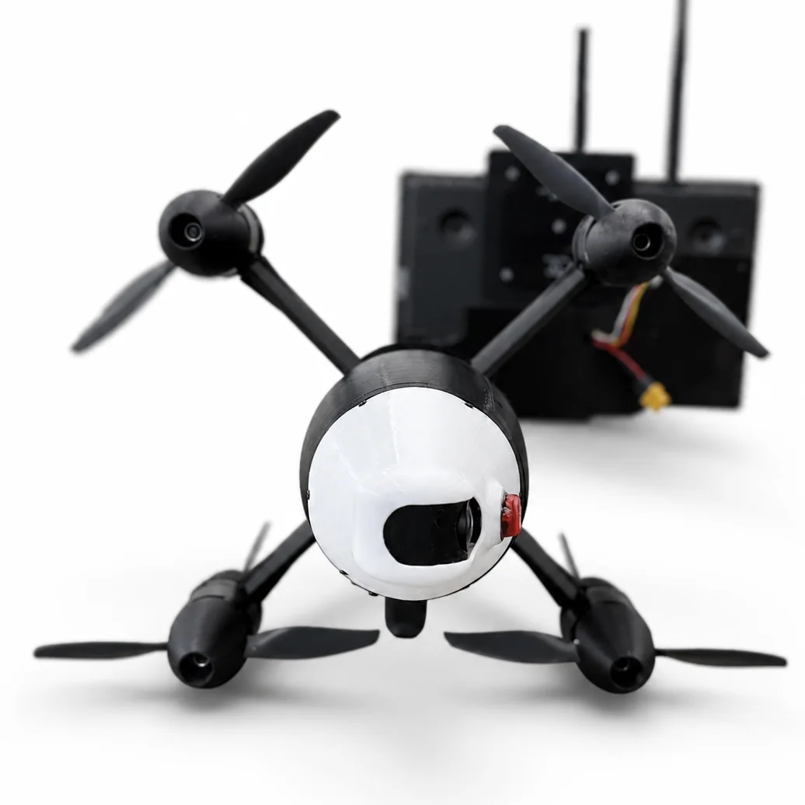
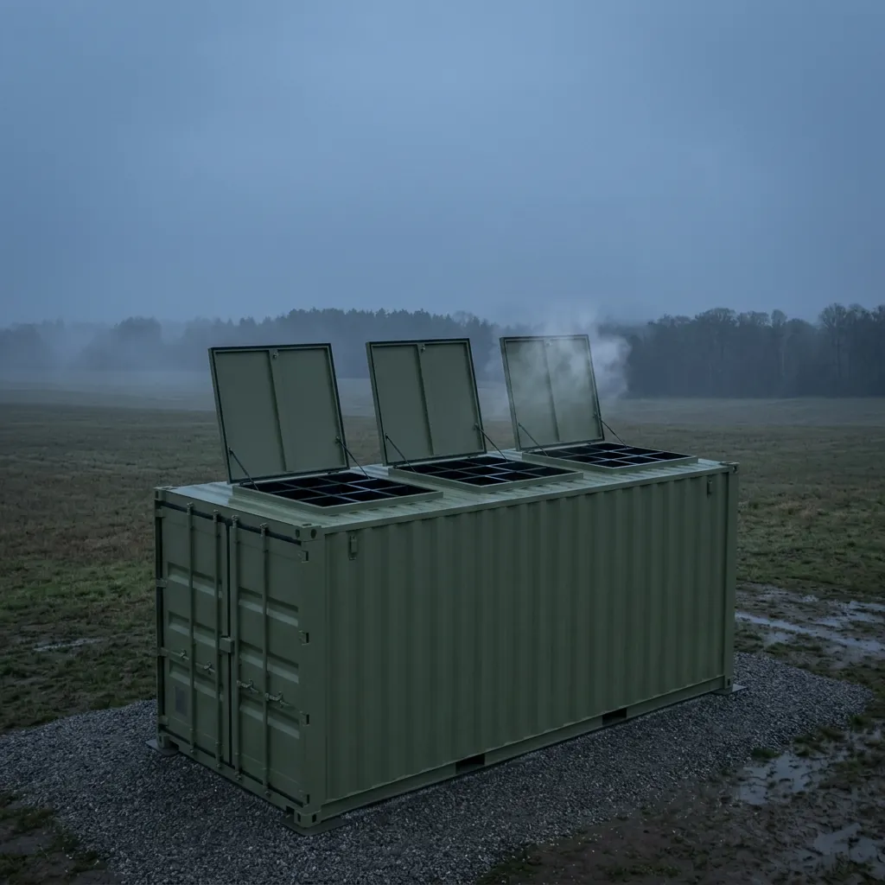
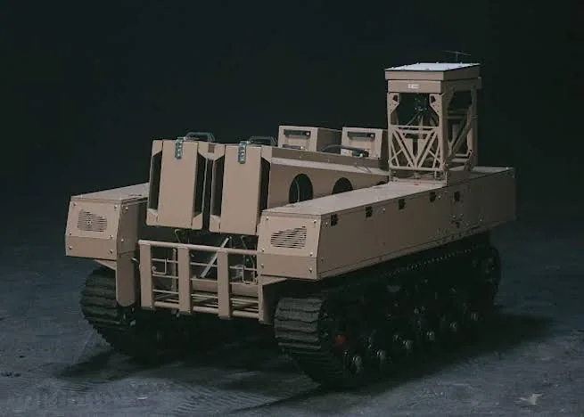
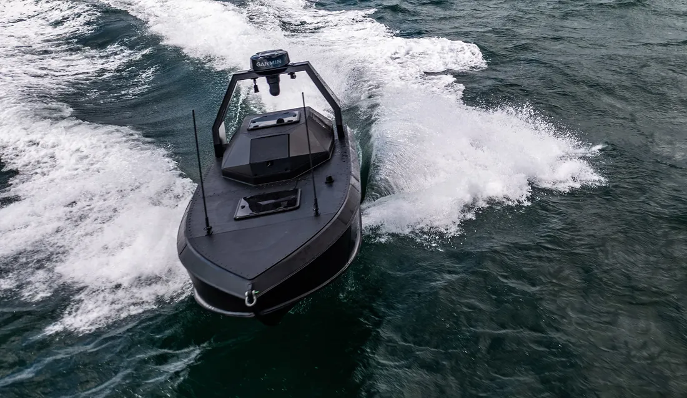
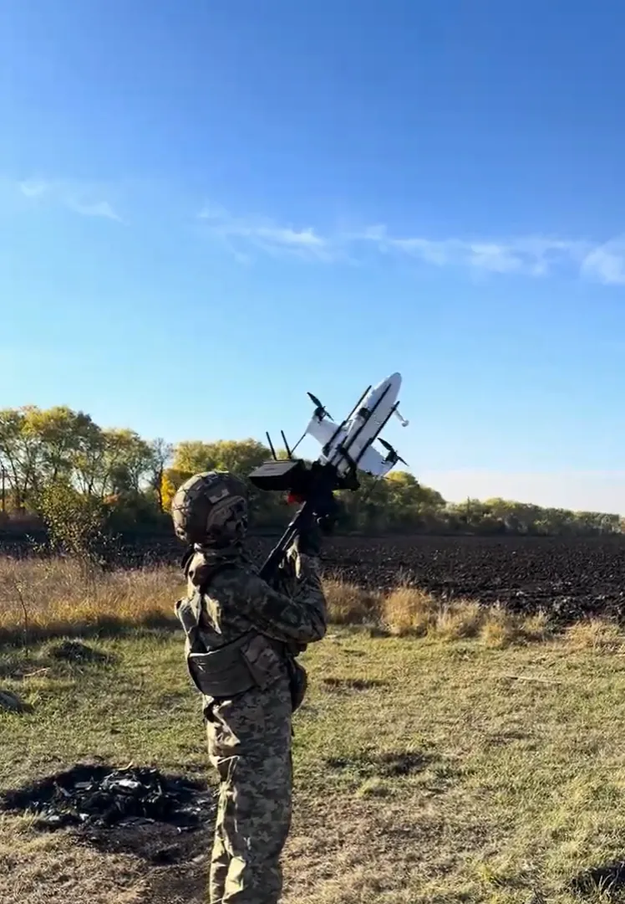
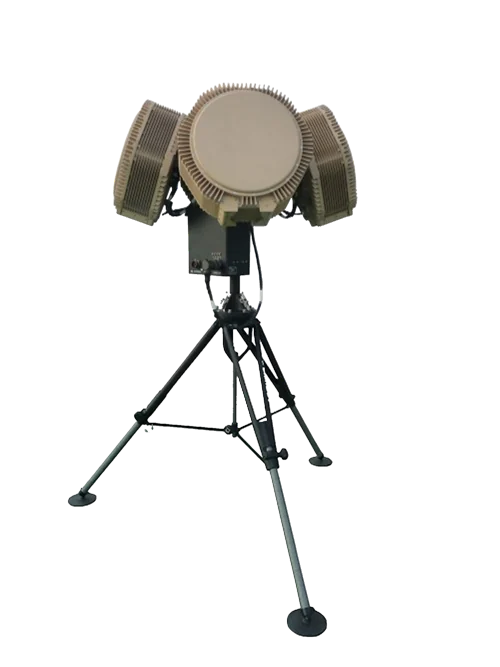

Long range
up to 50 kmIntercepts far from the object — before strike drones get close.


InterceptorsPart of Mosaic
Intercepts far from the object — before strike drones get close.

The midline against fast, jet-powered aerial targets.


The last line at the object, against anything that gets through.
Threats are met in depth: far from the object, on the midline and at the last close-in line. If one layer misses, the next one engages.
Intercepts far from the object — before strike drones get close.
The midline against fast, jet-powered aerial targets.
The last line at the object, against anything that gets through.
CONTOUR is WIY’s layered air defence system. It decides how, when and with which interceptor to engage — and links every layer into one connected shield.
Interceptor drones matched to the range and speed of the threat: STRILA reaches far out for Shahed-class targets, SPYS closes on jet-powered drones on the midline and at the object.
WIY interceptors are not tied to a launcher. Every one of them flies from fixed, mobile, airborne, naval and hand-held platforms — on any echelon, wherever the mission needs it.


Every platform, every echelon.L · Long range
M · Mid range
S · Self defence


UGV · USV · cars · airplanes · helicopters · UAV carriers
An open defence architecture: WIY is the integration layer between sensor makers, launch platforms and interceptors. Every source feeds one air picture.

Detects and tracks aerial targets and cues the interceptors to the target sector.
Daylight and thermal optics confirm and track the target. On board, the same channels guide the final approach.
Detect without emitting a signal, so the sensor itself stays hidden.
Shared air-situation data.
Third-party radars, optics and target-designation sources plug into the same picture.
The common operational picture that ties every source together.
Sensors and information flow into Mosaic UXS. It detects the threats, coordinates the decisions and integrates the effectors — CONTOUR carries out the air defence.
Builds the picture: what is in the air and what needs to be done.
Decides how, when and with which effector to engage.
The interceptor drone reaches and hits the target.
Results flow back and sharpen the next decision.